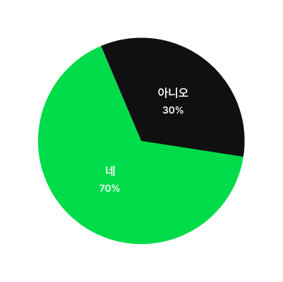

BACKGROUND
눈치 보지말고 자신의 음식취향을
자유롭게 공유할 수는 없을까?
'Shakeat' 은 자신의 취향을 조금 더
편하고 즐겁게 공유하고자 합니다.
-
나와는 다른 상대방의
개인 취향을 존중
눈치를 보면서 선택이나 결정을 내리는
시대에서 벗어나 자신이 원하는 바를
명확하게 표현하는 시대가 왔다. 이제는
자신의 취향을 명확하게 파악하고 표현하는
사람의 비중이 증가하고 있다. -
상대방과 식사할 때
눈치보이는 편식
대부분의 사람들은 불편한 사람 뿐 아니라
친한 사람들과도 식당을 정하는 상황에서
편식하는 음식이나 못 먹는 음식을 말할 때
눈치보는 경우가 많다고 한다. -
나와 타인을 분류하는
성격 유형 검사의 유행
최근 MZ 세대들은 서로 알아가는데
시간을 허비하지 않고 성격 유형 검사를 통해
서로의 성격을 파악하고 있다.
이러한 분류로 만들어진 소속감을
통해 심리적 안정감을 추구한다.
이렇게 생각해봤어요!
불편한 대화를 편하고 즐겁게 해결하면서
서로의 음식취향을 분석할 수 있게 된다면 어떨까?
User Survey
음식 취향의 다름으로 인해 불편함을 느낀 경험
10대~30대 77명을 대상으로 설문조사를 한 결과,
과반수의 사람들이 못 먹거나 편식이 심한 음식들로 인해
사람들과의 만남에서 불편함을 겪었습니다.
-
Q. 편식이 심한 음식으로 인해
곤란한 상황을 겪은 적이 있나요? -
Q. 곤란한 상황이라면,
주로 어떤 만남이나 상황이었나요?소개팅 회식 친한 친구 어른 어린 아이 여행지 -
Q. 주변에서 편식으로 곤란을 겪는 상황을

보신 경우가 있으신가요? -
Q. 이처럼 곤란한 상황들을 해결하기 위해
어떤 행동을 하셨나요?1. 제가 먹을 수 있는 음식이 있으면서 상대방이 먹고 싶은 음식도 있는 다른 식당을 찾은적이 있어요.
2. 참고 먹었지만 안 보이는 곳 에서 많이 버렸어요.
3. 솔직하게 못 먹는다고 말하지만 분위기를 띄우면서 말해야 해서 불편했어요.
4. 못 먹는다고 돌려말하거나 그냥 참고 먹었어요.
5. 저 하나 때문에 다른 식당을 정해야 하는 상황이였어서 그냥 참고 먹었어요.
6. 그냥 알러지 반응이 있다고 거짓말 했어요.
Key Insight
대면하지 않아도 자신의 음식 취향을
공유할 수 있도록!
SNS 사용량 증가에 따라 비대면 소통으로도 서로의 식사 정보를
확인할 수 있도록 모바일 기능인 네임드랍을 활용할 것 입니다.
비대면 음식 취향 공유">
UI Keywords
-
1.
단축성
Contractibleness
사용자가 손쉽게 원하는 콘텐츠를
처음부터 마지막까지 쉽게
마무리 할 수 있도록 해야합니다. -
2.
논리성
Logicality
사용자가 보기에 정보가 제공되는
순서나 구조가 논리적이라고
생각할 수 있어야 합니다. -
3.
개인화
Individualization
사용자가 자신의 활동 내역이나
저장한 서비스 내역 등을 한 눈에
알아 볼 수 있어야 합니다. -
Insight
사용자 개인의 취향을 존중하는
구조적 기능을 제공하고 간단하게
과업을 마무리할 수 있도록!
Project Goal
불편한 상황을 최대한 피하고 싶은 MZ세대의
음식 취향을 분석하고 공유해주는 서비스 'Shakeat'
개인의 음식 취향을 재미있게 파악하고 공유하여 소통을 더 원활히 하고, 개개인의 취향 교집합에 맞는 식사 정보를 제공하여
식사 시 발생되는 불편한 문제나 고민들을 간편하게 해결해주고자 하는 것이 목적입니다.
-
01
Persona
‘소심한 성격 탓에 상견례 자리에서
못먹는 음식을 말하기 두려워요.’ -
02
Persona
‘첫만남에 상대의 식성에 맞는
식당을 선택하는 것이 어려워요.’ -
03
Persona
‘소개팅 날, 상대방의 음식 취향을
고려하지 못해 망칠까봐 두려워요.’
Service Value
우리는 이런 가치의 서비스들을 제공합니다
-
01
음식 취향 테스트를 통한
취향 유형 도출서로의 음식 취향을 빠르고 쉽게 알 수 있도록
회원가입 이후의 앱 사용 중에도 자신의 음식 취향을
유형검사를 통해 네 가지 알파벳으로 정의할 수 있습니다. -
02
AI 분석을 통한 서로 간의
약속 장소 정하기앱 내의 채팅 방에서 서로가 설정한
음식 취향 정보, 상황, 거리 등을 AI 분석기능을 통해
음식과 장소를 지정해 줄 수 있습니다. -
03
자신의 음식 취향에 맞는
메인 컨텐츠들앱 메인페이지에서 자신의 선호 식재료에 따라
보여지는 취향의 음식들이 소개되며 자신과 비슷한
식사 취향의 사람들이 많이 보는 식당 및 음식과
싫어하는 음식들 또한 확인 할 수 있습니다.
서로의 음식 취향을 섞어
나의 취향을 말하는 것이 부끄럽지 않도록!
S 4 TYPE TEST 를 통해
본인의 음식 취향을 파악해보세요!
테스트를 완료하면 본인에게 해당되는 캐릭터를 알 수 있고,
프로필로 지정할 수 있어요.
S 4 TYPE TEST 결과지를 통해
16가지 유형의 결과를 확인하세요!
LOGO System
쉐이크잇의 첫 알파벳인 S와 시그니처 컬러 두가지를 조합하여
섞이는 느낌을 표현하고자 하였습니다.
Color System
음식 취향에 대한 새로운 패러다임을 제공하고자 하는 서비스의 의도를 컬러와 연결시켜 디자인 키워드를 도출해냈습니다.
이를 통해 Shakeat은 기존 시장의 맛집 추천 기능 보단 서로의 음식 취향을 분석하고 매칭하는 것에 집중하여
트렌디한 색상을 사용해 차별성 있는 아이덴티티를 부여하였습니다.
Main Color
#FF1477
Emerald Blush
Main Color
#00DB4A
Vivid
Sub Color
#101010
Sub Color
#FFFFFF
Font System
Pretendard
모두의 음식 취향을 Shake!
Bold
모두의 음식 취향을 Shake!
Semi Bold
모두의 음식 취향을 Shake!
Medium
모두의 음식 취향을 Shake!
Regular
Icon System
앱의 분위기에 맞는 핑크 네비게이션바와 아이콘, 다양한 음식을 표현하는 여러 종류의 화이트 아이콘
총 두가지 종류로 제작하여 서로 상호보완하는 아이콘을 만들고자 하였습니다.
Character